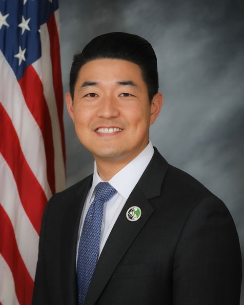

“I’m proud to endorse Allyson Lehrer for PVPUSD School Board. Allyson brings an even-keeled, level-headed approach to leadership, along with the heart and experience of an educator. She has real skin in the game as a longtime member of this community and PVPUSD graduate who returned to raise her family here. I know she will approach every issue thoughtfully, pragmatically, and with students, families, educators, and our community at the center of her decisions.
I’m confident Allyson will be a steady, thoughtful voice on the School Board, and I’m honored to support her.”
Paul SeoMayor, City of Rancho Palos Verdes